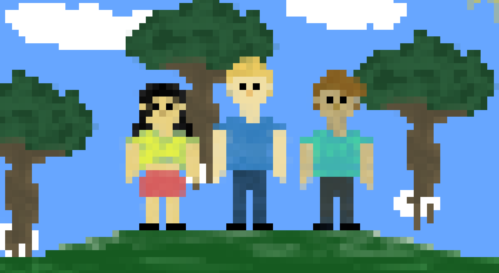

Online Gaming - Nettside prosjekt
Prosjektbeskrivelse
Dette er et simpelt, nettsted som viser til negative og positive sider ved relasjoner på nett ved bruk av HTML og CSS.
Funksjoner
Responsivt design som tilpasser seg skjermstørrelsen til enheten til brukeren.
Mulighet for å legge til, redigere og slette bilder.
Enkel navigering mellom bildene ved hjelp av piltaster eller sveipebevegelser (på mobile enheter).
Mulighet for å legge til bildetekster for å beskrive bildene dine.